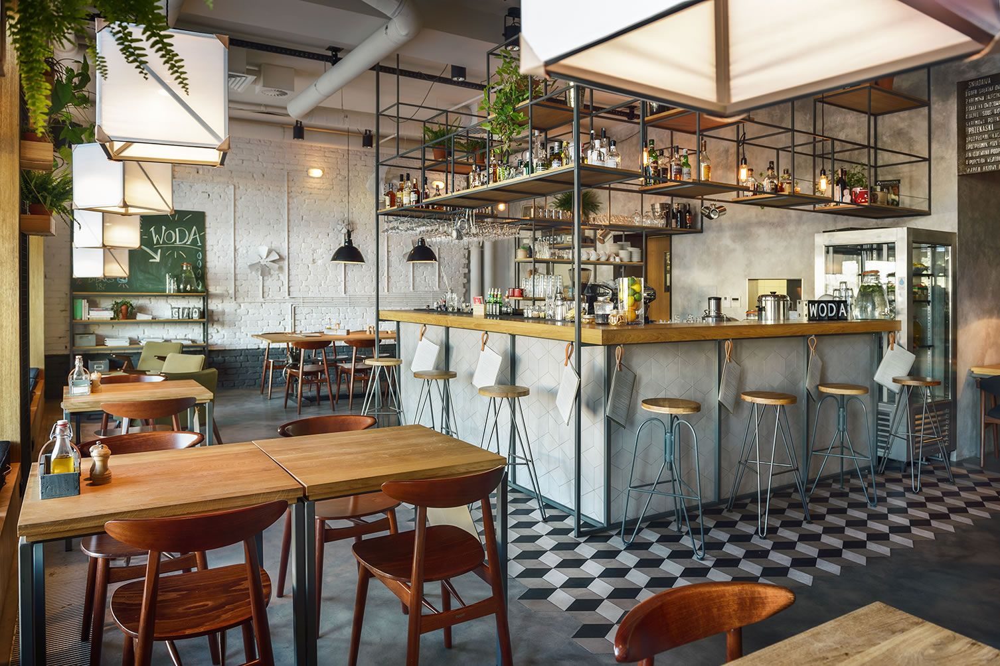
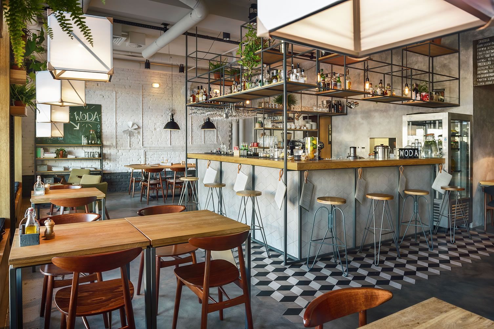

Tentang Kami
Kafe Kita adalah tempat yang sempurna untuk menikmati makanan dan minuman berkualitas dalam suasana yang nyaman. Berdiri sejak 2015, kami terus berkomitmen untuk memberikan pengalaman terbaik bagi setiap pelanggan dengan menyajikan hidangan yang dibuat dari bahan-bahan segar dan pelayanan yang ramah.
Visi & Misi
Visi
Menjadi kafe terbaik yang memberikan pengalaman kuliner istimewa dan menciptakan kenangan manis bagi setiap pelanggan.
Misi
- Menyediakan makanan dan minuman berkualitas tinggi dengan bahan segar dan alami.
- Menciptakan suasana yang nyaman untuk berkumpul bersama keluarga dan teman.
- Memberikan pelayanan yang ramah dan profesional untuk memenuhi kebutuhan pelanggan.
Sejarah Kami
Kafe Kita dimulai dari sebuah mimpi sederhana dua sahabat yang ingin menghadirkan tempat makan yang menyatukan rasa, suasana, dan kenangan. Sejak pertama kali dibuka di Depok, kami telah tumbuh menjadi salah satu destinasi favorit, tidak hanya untuk makan, tetapi juga untuk berbagi cerita.
Tim Kami
Devan Novyan
Founder & Chef
Redemptus Evan
Manager Operasional
Zahra Amelia
Barista
Fabio Franaja
Head Waiter
Galeri
 

Lokasi Kami
Jl. Komjen.Pol.M.Jasin No.9, Tugu, Kec. Cimanggis, Kota Depok, Jawa Barat 16451